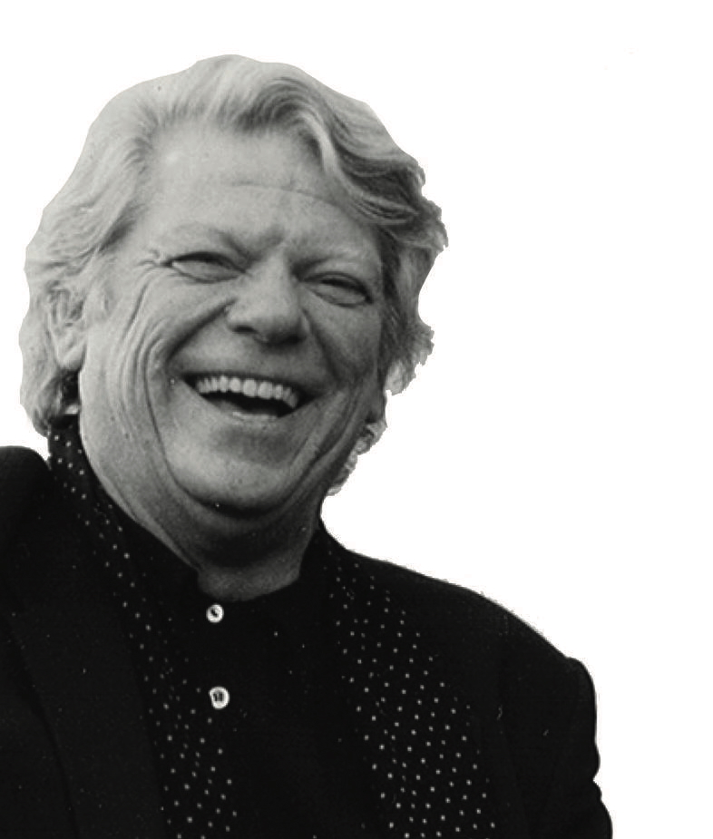
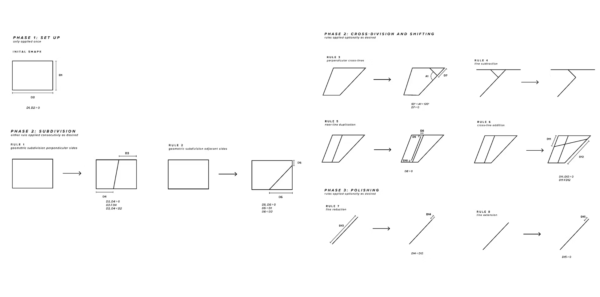
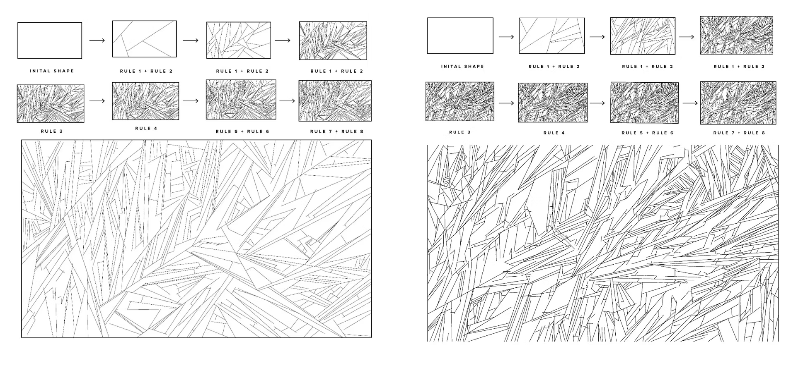
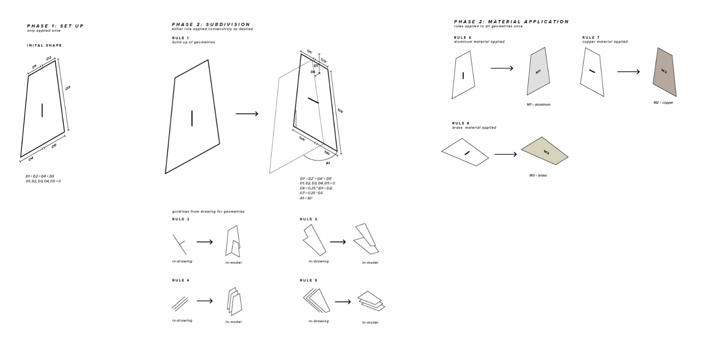
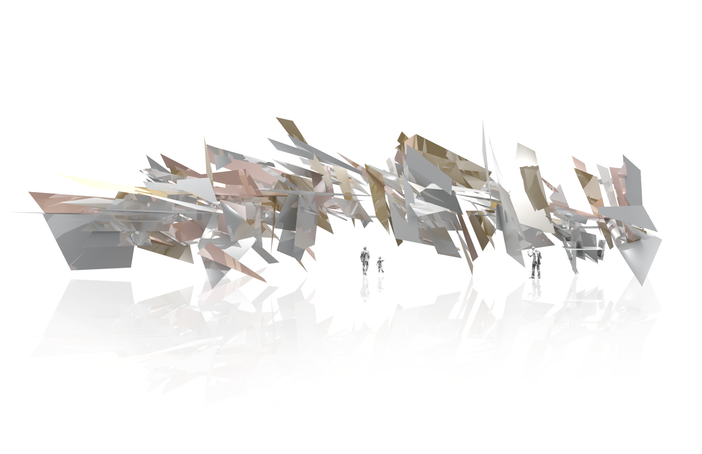
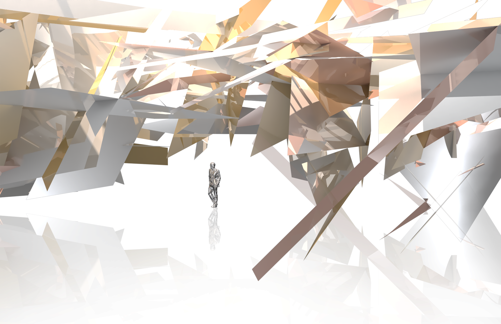
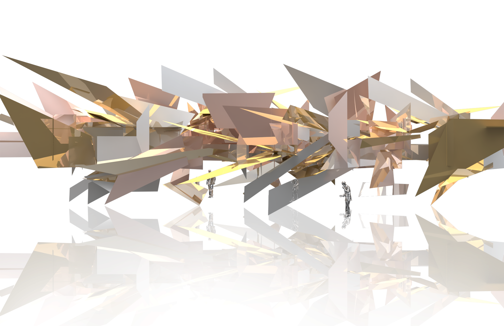
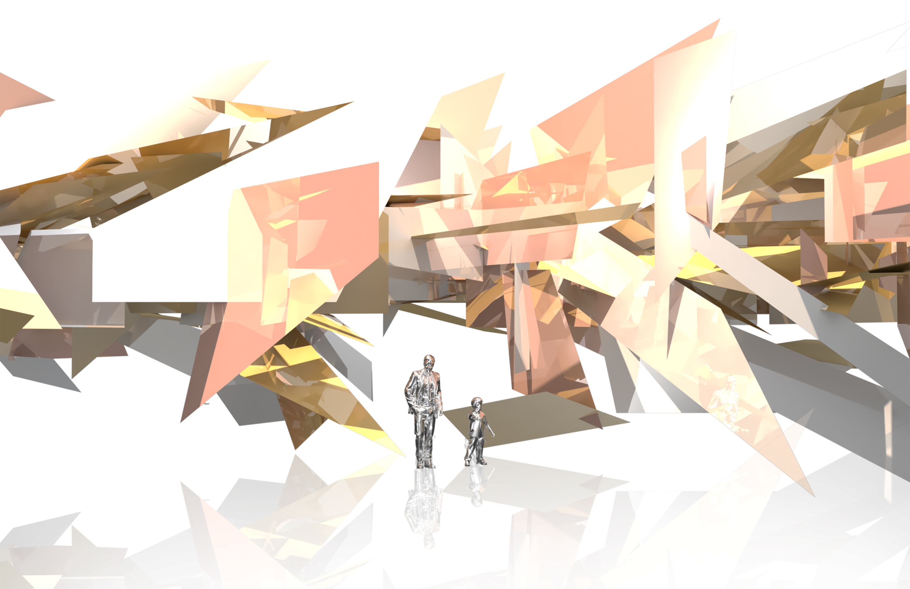
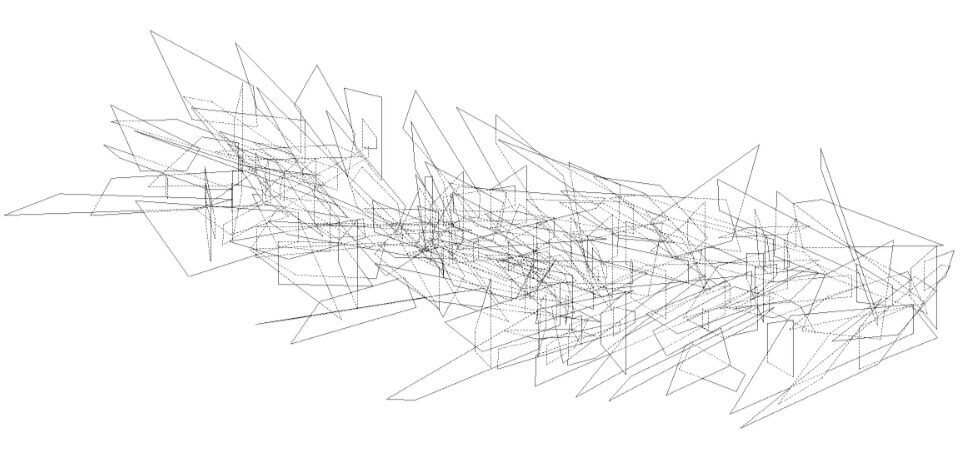
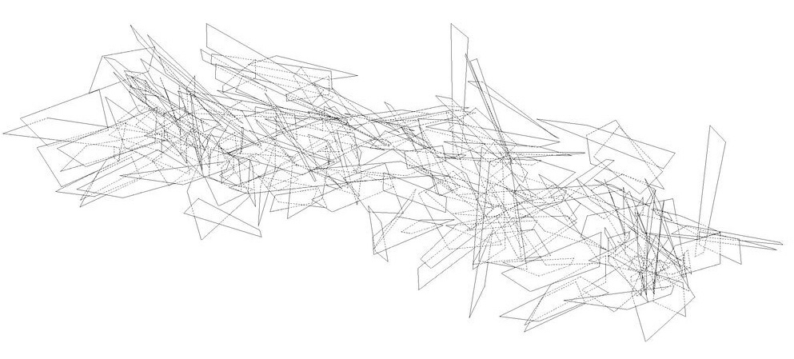

2022
INTO THE WOODS
a shape grammar for Lebbeus Wood's Terrain series
This project examines Lebbeus Woods' drawings from a shape grammar perspective to develop a system to take the 2D drawings into 3D space.
CONTEXT
4.521 Visual Computing
MIT SA+P
SOFTWARE
Rhinoceros3D, Photoshop, Illustrator, Enscape, V-Ray
SUPERVISOR
Terry Knight

Lebbeus Woods (1940-2012) was a prolific American architect and artist known for
his abstract, imaginative, and experimental designs and drawings. Although Woods’
drawings are frequently recognized, he did not produce a large volume of built
work. His only built project is the light pavilion within Steven’s Holl’s towers
in Shanghai. While many have book able view Lebbeus woods’ drawings, a select view
have had the opportunity of experiencing the architecture spatially.
This project endeavors to change this. By designing a shape grammar for a series
of Lebbeus Woods’ drawings (those selected were from the ‘Terrains’ series from
his 1999-2000 sketchbooks), the project will develop a three-dimensional formal
language around his work in order to general 3D environments. These spaces will
then be able to be experienced via one of a number of representation techniques,
including virtual reality, architectural drawings, and models.









